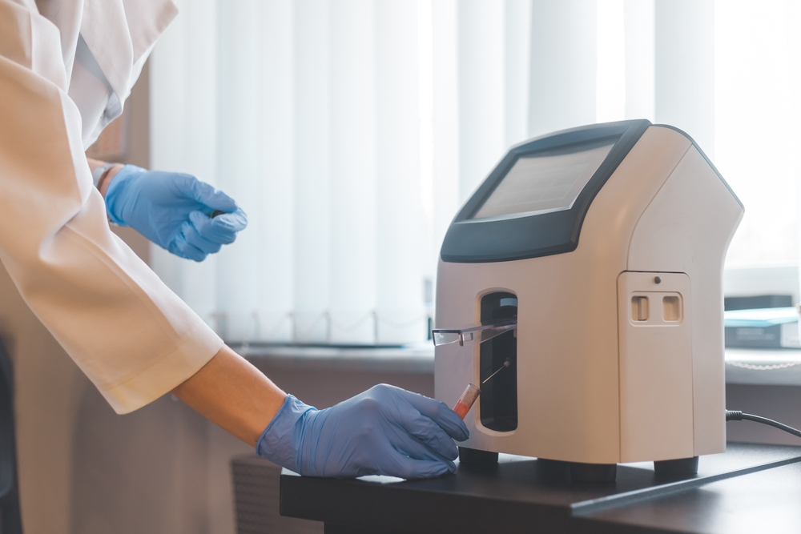

Instrument portfolio
Browse product families and request the information relevant to your laboratory.
Diagnostic instruments, reagents and laboratory solutions designed to support modern healthcare and clinical laboratories.
Company figures shown from the public Dr. NTR Biosciences reference website; verify before production.
Explore instruments and diagnostic solutions across clinical chemistry, hematology, coagulation, rapid testing, point-of-care and molecular diagnostics.
Clinical chemistry analyzers, reagents, controls and calibrators.
Explore category ↗ 02 / 06Rapid diagnostic tests across infectious disease and other assay areas.
Explore category ↗ 03 / 06Near-patient testing solutions, including glucose and electrolyte systems.
Explore category ↗ 04 / 06Nucleic-acid extraction, real-time PCR systems and assays.
Explore category ↗ 05 / 06Hematology analyzers, reagents, controls and calibrators.
Explore category ↗ 06 / 06Coagulation analyzers and reagents for blood-clotting assessment.
Explore category ↗Product names and category descriptions are based on publicly available reference pages. Confirm current availability, specifications, certifications and image-use permissions with the company before publishing.

Dr. NTR Biosciences Pvt. Ltd. operates under the Lorven brand. Its public company profile describes diagnostic instrument and reagent manufacturing, R&D activity and a portfolio spanning multiple IVD categories.
Read the official company profile ↗From instruments and reagents to technical assistance, make it easy for visitors to find the right team and next step.
Browse product families and request the information relevant to your laboratory.
Find relevant reagent groups and ask about product availability and compatibility.
Provide a clear path for service questions, technical assistance and product enquiries.
“The fully automated biochemistry systems from Dr. NTR Bio Sciences have transformed our lab operations. Accurate, fast, and reliable…”
“The blood glucose meter from Dr. NTR Bio Sciences is accurate, easy to use, and reliable…”
“Hands-on learning, advanced facilities, and expert guidance provided here have given me the skills and confidence to excel…”
These excerpts are taken from the public reference website and shortened for layout. Verify authenticity, exact wording and authorization before using them as endorsements.
Request a quotation, product specifications, a demo, or help choosing the right diagnostic solution. Our team can follow up with you.
Interested in contributing to diagnostic science, manufacturing, research or customer support? Contact our team to ask about current opportunities.
Enquire about careers ↗